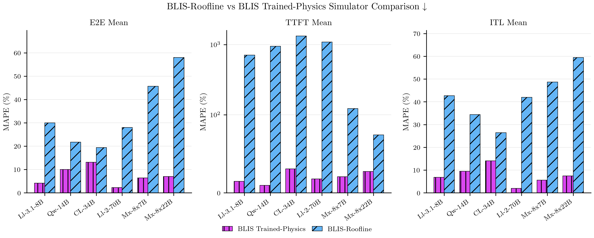

What We've Learned About Modeling LLM Latency¶
The last post covered how BLIS models the engine, data plane, and control plane to predict full-pipeline latency without touching a GPU. What it didn't answer is whether the predictions can be trusted.
That comes down to one number. Everything BLIS reports at the cluster level rests on its estimate of how long a single forward pass takes, so if that's off, nothing above it can be right. This post is about how we estimate it, how well it holds up, and where it falls short.
The headline, up front: fit once on H100, BLIS predicts held-out configurations (six models across three GPU types) at 6.7% median end-to-end error, roughly 200× faster than running them for real, and those predictions have already steered serving policies we later confirmed on a physical cluster: a better admission controller and soft reflective flow control for llm-d. The rest of this post is how we get there, and where it still falls short.
The problem¶
An LLM deployment has a lot of knobs that don't move independently:
- tensor-parallel degree
- replica count
- chunk size (
max_num_batched_tokens) - KV-cache budget
- routing and admission policies
Changing one shifts the others, and tail latency especially can't be read off a datasheet: it comes out of queueing, continuous batching, and KV-cache pressure interacting under real traffic. Measuring it reliably means running the configuration on real GPUs, but for a 70B model that's around 18 minutes per configuration, and a capacity study runs hundreds of them.
BLIS avoids that cost by predicting a single batch step on a CPU from the model's
config.json and the GPU's datasheet, then letting a discrete-event simulator stitch those
steps into end-to-end latency.
The property we care about most: the latency model is fit once, then reused on models, GPUs, and TP degrees it never saw during training, with no per-configuration profiling.
Two models, one basis¶
Both models are built on the same set of basis functions.
Roofline model. The analytical one, with no training. It expresses a batch step as
roofline bounds grouped by phase: a compute term (operations over peak FLOP/s) and a memory
term (bytes over bandwidth) for prefill and decode, plus terms for weight loading and the
tensor-parallel all-reduce. Since peak bounds overstate what real hardware hits, it scales
each by a fixed Model-FLOPs-Utilization factor from published benchmarks (roughly 0.45 prefill,
0.30 decode on an H100), and it's selected with --latency-model roofline.
Trained-physics model. This is the default. It keeps those same basis functions but replaces the fixed utilization factors with coefficients learned from data, and adds the costs the roofline leaves out: per-layer, per-request, and per-step overheads, a term for MoE layers, and CPU-side costs for request ingestion, detokenization, and token streaming. This is what the last post called the physics-based model with learned corrections.
The reasoning behind the split:
The basis functions know the shape of the computation; the coefficients only correct for how far real kernels run below the ideal roofline bound.
That shortfall comes from memory-access patterns, kernel launch overhead, synchronization, and scheduling. Because the basis functions read everything they need from published architecture parameters, applying the model to a new architecture just means plugging in new numbers.
For the curious: the equations
Six roofline basis functions cover the dominant costs of a step, grouped by phase: prefill (pf), decode (dc), weight loading, and tensor-parallel (tp) communication. Compute terms divide floating-point operations \(F\) by peak throughput \(P\); memory terms divide the bytes moved \(M\) by HBM bandwidth \(W\), or interconnect bandwidth \(W_{\text{net}}\) across shards.
The trained-physics step time combines them with learned scaling coefficients and additive overhead terms:
where \(L\) is the number of layers, \(B\) the batch size, and \(n_{\text{MoE}}\) the number of interleaved MoE layers. The scaling factors \(\beta_{1a}\)–\(\beta_{2b}\) are dimensionless, while \(\beta_5\)–\(\beta_8\) and the per-request overheads \(\alpha_0\)–\(\alpha_2\) (ingestion, detokenization, per-token streaming) carry units of time. The fit drives \(\beta_{1b} = 0\) (prefill is compute-bound) and \(\beta_{2a} = 0\) (decode is memory-bound).
How we trained it¶
The goal was a single set of coefficients that holds up across three axes at once:
- model architecture: dense, grouped-query-attention, mixture-of-experts
- GPU type: different compute, bandwidth, and interconnect
- tensor-parallel degree: single-GPU up through multi-GPU with all-reduce
With those covered, a single fit lets BLIS predict any new model / GPU / TP combination from its config and datasheet.
No kernel- or operator-level profiling¶
BLIS never uses per-operator or per-kernel timing. Training runs on batch-step traces, KV-cache events, and request-level latency metrics; evaluation uses only the request-level metrics (TTFT, ITL, throughput, E2E). Most other simulators are built the other way:
- AIConfigurator profiles individual operators (GEMM, attention, communication) on the target hardware.
- Vidur fits a per-operator random-forest model from profiled runtimes, one per (model, GPU, TP) configuration.
- LLMServingSim runs a layer-wise profiler inside the engine.
- llm-optimizer is purely analytical, so it needs no measurement at all, but it also can't see continuous batching, queueing, or KV-cache pressure.
The first three depend on operator- or kernel-level timings measured from inside vLLM or the GPU, exactly what BLIS avoids. That instrumentation also has to be redone for each new model, GPU, and sometimes workload before those tools can simulate it. BLIS fits once and then predicts new combinations from published parameters, no fresh profiling required.
Training data¶
The training set is fifteen serving runs on H100s, spanning dense, grouped-query-attention, and MoE models at TP degrees 1, 2, and 4. The mix forces one coefficient set to satisfy several regimes at once: dense models where the MoE terms drop out, MoE models where interleave overhead dominates, single-GPU where the all-reduce term is zero, and multi-GPU where communication matters.
A two-loop fit¶
The fit runs two nested loops. An outer loop changes the model's structure (adding, splitting, or correcting terms), but only when the residuals show a consistent pattern rather than noise; the per-MoE-layer term, for example, came from watching MoE models under-predict across the board. An inner loop then fits the coefficients for that fixed structure with Bayesian optimization, then CMA-ES, then a golden-section polish. What kept this honest was refusing to make a structural change we couldn't justify physically, just because it lowered the loss.
For the curious: loss and training loop
The objective sums the RMSE of absolute-percentage-error across the 15 experiments, for both mean TTFT and mean E2E latency:
Taking the RMSE over per-experiment APEs (rather than a pooled mean) penalizes variance across architectures, so a coefficient set that is accurate on one model family but poor on another still incurs a high loss.
The fit itself is two nested loops: an outer loop that evolves the model's structure and an inner loop that fits its coefficients.
Input: initial model form f₀, training experiments {E₁, …, E₁₅}
Output: final structure f* and coefficients (α*, β*)
for each outer iteration k = 1, 2, … # structural evolution
examine per-experiment errors from iteration k−1
identify systematic residuals (e.g. MoE under-prediction)
hypothesize a physics-motivated structural change → new form fₖ
define coefficient search bounds Bₖ
for each candidate (α, β) ∈ Bₖ proposed by the optimizer # inner loop
compile BLIS with fₖ and (α, β)
run BLIS on all 15 experiments in parallel
L ← RMSE[APE(TTFT)] + RMSE[APE(E2E)]
(αₖ*, βₖ*) ← argmin L
if loss converged: break
return (fₖ, αₖ*, βₖ*)
The inner-loop optimizer starts with TPE Bayesian search for wide exploration, then narrows to CMA-ES and a golden-section polish as the structure stabilizes.
How we evaluate it¶
Evaluation uses the same client-side approach, checking BLIS against the latencies a real server produced rather than instrumented kernel timings. Three commands do it:
observesends a workload to a real vLLM or llm-d deployment and records per-request TTFT, ITL, and E2E into a portable trace (TraceV2), the ground truth.replaypushes that trace back through the simulator with the timing fixed, so the comparison is on identical inputs (run and replay are byte-identical by construction).calibratecompares the simulated latencies against the observed ones and reports the error as MAPE.
We ran this comparison 36 times, each a different point in the evaluation space: six models, three GPU types, and a sweep of serving configurations on top (the full evaluation matrix is laid out separately). The set deliberately doesn't overlap the training data. None of the six models were used to fit the coefficients, and two of the three GPUs (the A100 and L40S) weren't in the training set either, so the results are generalization to unseen configurations rather than a fit recalling its own data.
How accurate is it¶
Every number here is a prediction against a real server, on configurations BLIS never trained on. The scripts that reproduce these BLIS accuracy results are here.
Where it's strong¶
- 6.7% median E2E error across those 36 experiments
- ~200× faster than real execution
- P90 within 7.5% and P99 within 9.2%, so the tail percentiles a capacity search relies on hold up, not just the mean
- ITL 7.1%, unsurprisingly, since decode is the memory-bound regime the model captures best
The cross-GPU picture is the one the design is aimed at: fit on H100 (5.5% E2E error), the model still lands at 15.7% and 13.3% on the unprofiled A100 and L40S from the datasheet alone. The learned terms matter, too. Strip them out and fall back to fixed utilization factors, and the roofline-only model is consistently less accurate, with the gap widest on TTFT.

Trained-physics (magenta) against roofline-only (blue) on the six evaluation models. The learned coefficients cut error on every metric, with the largest gains on TTFT (note the log scale in the middle panel).
Where it's weaker¶
- TTFT is the hardest metric, ~17.6% mean. It's where queueing and scheduling-order effects dominate, and small per-step errors have room to compound.
- A couple of regimes break hardest. Long-decode reasoning (~1,450 output tokens) pushes E2E error to ~25% as per-step timing errors accumulate, and NVLink all-reduce contention is under-accounted for, enough that TP=2 can take a small dense model from 2.5% up to 15.5%.
Stay tuned for a full-length research paper with a head-to-head against other predictive tools on accuracy, speed, and search fidelity.
For the curious: tail-latency table
Since trained-physics is the clearly stronger model above, we report tail-latency accuracy for it alone. The figures are its error, taken as the median across the 36 eval experiments (median rather than mean so a couple of hard configs don't drag the number away from the typical case). The row label is the latency statistic within each experiment.
| Statistic | Median MAPE |
|---|---|
| E2E mean | 6.7% |
| E2E P90 | 7.5% |
| E2E P99 | 9.2% |
| TTFT mean | 17.6% |
| TTFT P90 | 21.3% |
| TTFT P99 | 29.0% |
| ITL mean | 7.1% |
Putting it to work¶
That same loop also reveals whether the fit still holds when vLLM, the hardware, or the
workload moves. Once it's trusted, run sweeps hundreds of configurations on a CPU in minutes,
treating P90 and P99 as first-class search dimensions. In one sweep of 1,100 Llama-2-70B
configurations, it found a 4-GPU deployment that held a 300 ms mean-TTFT SLO under load, which
we confirmed on a real 8×H100 cluster.
Where this goes: coefficients as distributions¶
Today the α and β coefficients are point estimates, so every prediction is a single number
with no sense of how much to trust it. That matters most when a predicted P99 sits just under
an SLO and you can't tell a comfortable margin from a coin flip. Putting a Bayesian posterior
over the coefficients would turn predictions into ranges, let each observe trace tighten the
fit instead of forcing a periodic re-fit, and give the policy-search loop a per-candidate error
bar to promote on. How to do that, including the likelihood-free inference the non-linear
effects like NVLink contention call for, is the subject of a forthcoming companion paper.
The bottom line¶
A physics prior plus a learned correction, fit a single time, lands at 6.7% median E2E error across all 36 held-out experiments and runs roughly 200× faster than real execution. Even on the A100 and L40S, which never appeared in training, it holds cross-GPU error to 15.7% and 13.3% from the datasheet alone. Its predictions have already steered serving policies we validated on real hardware. Plenty is still open, from the TTFT and long-decode weak spots to putting distributions on the coefficients, and we'll write more as it develops.
Earlier in this series: Why Simulate Before You Scale and The Physics of High-Fidelity Distributed Inference Platform Simulation.